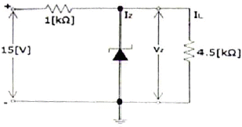
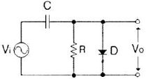
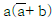
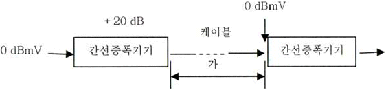
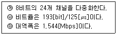
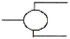

방송통신산업기사 (2011-03-13 기출문제)
1과목: 디지털 전자회로
1. 전원설비 중 정류기의 특성 변수 결정 방법으로 틀린 것은?
- 최대역전압 = 정류기의 다이오드에 걸리는 역방향 최대치
- 정류효율 = (출력 직류 전류 / 입력 교류 전류) ×100[%]
- 전압변동률 = {(무부하시의 출력전압 - 부하시의 출력전압) / 무부하시의 출력전압}×100[%]
- 맥동률 = (출력 교류분 전압실효치 / 출력 직류분 전압평균치)×100[%]
(정답률: 56%)

2. 다음 정전압 회로에서 IZ는 얼마인가?(단, 제너전압(VZ)은 9[V]이다.)

- 3[mA]
- 4[mA]
- 5[mA]
- 6[mA]
(정답률: 54%)
3. 전원회로에서 부하에 최대전력을 공급하기 위해서는 어떻게 하여야 하는가?
- 전원 내부저항과 부하저항이 같아야 한다.
- 전원 내부저항보다 부하저항이 커야 한다.
- 전원 내부저항보다 부하저항이 작아야 한다.
- 전원 내부저항보다 부하저항이 크거나 작아야 한다.
(정답률: 75%)
4. N채널 JFET 증폭회로에서 드레인-소스 포화전류 IDSS=5[mA], 핀치오프 전압 VP=-2.5[V]일 때 드레인 전류 ID는? (VGS=-0.5[V]이다.)
- 1.5[mA]
- 3.2[mA]
- 4.0[mA]
- 5.0[mA]
(정답률: 56%)
5. 트랜지스터를 사용한 이상(phase shift) CR 발진기에서 발진을 지속하기 위해 트랜지스터의 증폭도는 최소 얼마 이상이어야 하는가?
- 10
- 29
- 100
- 156
(정답률: 79%)
6. 송신기의 완충증폭기(Buffer Amp)에 많이 쓰이는 증폭 방식은?
- A급
- B급
- C급
- AB급
(정답률: 88%)
7. 다음 증폭방식 중 효율이 가장 높은 증폭 방식은?
- A급
- B급
- AB급
- C급
(정답률: 90%)
8. 고주파 증폭회로에서 중화조정을 하는 목적은 무엇인가?
- 자기발진 방지
- 대역폭 증대
- 전력효율 증대
- 높은 이득
(정답률: 85%)
9. 다음 중 클랩(clapp) 발진기의 특징이 아닌 것은?
- 콜피츠 발진기를 변형한 것이다.
- 발진주파수가 안정하다.
- 발진주파수 범위가 작다.
- 발진출력이 크다.
(정답률: 80%)
10. 무선송신기에 수정진동자를 사용하는 이유로 가장 타당한 것은?
- 발진주파수가 안정하기 때문이다.
- 고조파를 쉽게 얻을 수 있기 때문이다.
- 일그러짐이 적은 파형을 얻기 위해서이다.
- 발진주파수를 쉽게 변경할 수 있기 때문이다.
(정답률: 74%)
11. 음성신호를 PCM 신호로 만들기 위해 샘플링을 하였다. 이때 엘리어싱(Aliasing)을 피하기 위해 샘플링 주파수를 최소한 얼마 이상으로 해야 하는가? (단, 음성신호의 최고주파수는 4[kHz]이다.)
- 4[kHz]
- 8[kHz]
- 10[kHz]
- 12[kHz]
(정답률: 75%)
12. 펄스 파형의 상승 시간(rising time)을 바르게 정의한 것은?
- 최대 진폭의 10[%]에서 90[%]까지 상승하는데 걸리는 시간
- 최대 진폭의 5[%]에서 95[%]까지 상승하는데 걸리는 시간
- 최대 진폭의 15[%]에서 85[%]까지 상승하는데 걸리는 시간
- 최대 진폭의 0[%]에서 100[%]까지 상승하는데 걸리는 시간
(정답률: 96%)
13. 쌍안정 멀티바이브레이터 회로에서 저항에 병렬로 접속된 콘덴서의 주요 목적은?
- 증폭도를 높이기 위해
- 스위칭 속도를 높이기 위해
- 베이스 전위를 일정하게 하기 위해
- 이미터 전위를 일정하게 하기 위해
(정답률: 72%)
14. 직렬형 다이오드 슬라이서 회로 구성 중 쌍으로 존재하는 것이 아닌 것은?
- 다이오드
- 저항
- 교류전원
- 직류전원
(정답률: 74%)
15. 다음 그림과 같은 회로의 명칭으로 적합한 것은?

- Clipping Circuit
- Clamping Circuit
- Slicer Circuit
- Limiter Circuit
(정답률: 80%)
16. 0~9까지의 10진수를 BCD 부호 또는 2진수로 변환하고자 할 때 사용할 수 있는 회로는 다음 중 어느 것인가?
- 디코더
- 인코더
- 멀티플렉서
- 디멀티플렉서
(정답률: 75%)
17. 8421코드 0100 0010 0001의 10진수 값은?
- 521
- 421
- 321
- 221
(정답률: 95%)
18. 부울 대수

를 간단히 하면?- a
- ab
- a+b
- b
(정답률: 74%)
19. 10개의 플립플롭이 +5[V] 직류전원에서 동작하고 25[mA]의 전류가 흐른다면 전력소모량은 다음 중 얼마인가?
- 125[mW]
- 250[mW]
- 1.25[W]
- 2.5[W]
(정답률: 59%)
20. 다음 중 NAND 게이트를 이용한 RS-래치(latch) 회로의 진리값으로 옳은 것은?
- 입력 R=0, S=1일 때 출력 Q=0, Q'=0
- 입력 R=1, S=1일 때 출력 이전 상태 유지(불변)
- 입력 R=1, S=0일 때 출력 Q=0, Q'=1
- 입력 R=1, S=1일 때 출력 부정
(정답률: 74%)
2과목: 방송통신 기기
21. 스튜디오 부조정실에 대한 설명 중 맞지 않은 것은?
- “부조”라고도 하며, 스튜디오 프로그램 제작의 지휘실이다.
- PD(Program Director)와 TD(Technical Director)가 사용한다.
- 영상조정, 음향조정, 조명설비가 설치되어 있다.
- 카메라제어기(CCU), 스위처, 오디오 콘솔이 설치되어 있다.
(정답률: 74%)
22. 다음 중 TV 주조정실에서 사용되는 방송장비가 아닌 것은?
- VCR/VTR
- Master Switcher
- 방송송출용 Server
- Off-line editor
(정답률: 71%)
23. 3D TV 전송방식을 개발하려고 한다. 현재의 DTV 수상기와 역호환성을 유지하면서 3D 영상을 전송할 수 있는 방법 중 가장 적합한 것은?
- Side by Side 방식
- H.264+H.264 방식
- MPEG2+H.264 방식
- Top-Bottom 방식
(정답률: 84%)
24. 송신기에서 낮은 발진주파수를 원하는 송신주파수로 높이기 위한 주파수 체배기의 증폭 방식은?
- A급 증폭
- B급 증폭
- C급 증폭
- D급 증폭
(정답률: 67%)
25. FM 방송의 최대 주파수편이가 ±75[kHz]이다. 최대 변조주파수가 15[kHz]일 때 전송주파수 대역폭은 얼마인가?
- 75[kHz]
- 150[kHz]
- 165[kHz]
- 180[kHz]
(정답률: 89%)
26. 방송되는 주파수 f의 파장(λ)을 산출하는 공식은? (단, c=3×108[m/s])
- λ = c / f
- λ = c×f
- λ = c / f2
- λ = f /c
(정답률: 85%)
27. 다음 중 초단파(VHF) 송신안테나로 적당하지 않는 것은?
- 다이폴 안테나
- 파라볼라 안테나
- 헤리컬 안테나
- 슈퍼턴스타일 안테나
(정답률: 77%)
28. TV 영상신호를 제작하기 이하여는 카메라, VCR, 영상스위치어 등 다수의 비디오 제작 및 편집 장비가 필요한데, 이들 장비 간에 동기가 되지 않을 경우에는 화면이 흐르거나 순간적으로 화면이 무너지는 현상을 초래한다. 이런 현상을 막기 위한 장치 간에 동기 방법에 해당되지 않는 것은?
- Line lock
- Video lock
- Sync lock
- Genlock
(정답률: 64%)
29. 우리나라 칼라 TV 방송방식인 NTSC 방송의 특성에 해당되지 않는 것은?
- 영상신호 주파수 대역은 4.2[MHz]이다.
- 중간주파수는 영상은 45.75[MHz], 음성은 41.25[MHz]이다.
- 변조방식은 영상은 VSB, 음성은 FM 방식이다.
- 방송신호의 대역폭은 6[MHz]이나 채널특성에 따라 변동이 가능하다.
(정답률: 62%)
30. 다음 중 뉴스 취재 및 스튜디오 야외 녹화용으로 사용되는 카메라는?
- 일체형 EFP 카메라
- 착탈형 ENG/EFP 카메라
- 스탠더드 카메라
- 일체형 ENG 카메라
(정답률: 94%)
31. 다음 중 TV 중계차에서 연주소로 전송하는 회선은?
- FTP
- STL
- TSL
- FSS
(정답률: 70%)
32. 위성방송에 사용하는 MPEG-2의 Transport Stream의 한 Packet은 어떻게 구성되는가?
- 4[byte]의 header와 184[byte]의 payload를 포함한 188[byte]로 구성된다.
- 8[byte]의 header와 256[byte]의 payload를 포함한 264[byte]로 구성된다.
- 2[byte]의 header와 256[byte]의 payload를 포함한 258[byte]로 구성된다.
- 32[byte]의 header와 256[byte]의 payload를 포함한 260[byte]로 구성된다.
(정답률: 69%)
33. 다음 중 위성 DMB의 중계기인 Gap-Filler의 설명으로 맞지 않는 것은?
- 위성 수신안테나, 송신안테나 및 본체로 구성
- 위성으로부터 12.214~12.239[GHz](Ku-band)의 주파수대역으로 수신
- 2.630~2.655[GHz](S-band)의 주파수대역으로 변환하여 송신
- 본체는 TDM 신호로 바꾸어 단말로 송신
(정답률: 77%)
34. 다음 중 위성방송에서 인가받지 못한 사람이 시청하는 것을 방지하기 위한 기능은 무엇인가?
- EPG
- CAS
- PPV
- VOD
(정답률: 71%)
35. 다음 중 위성방송 수신기의 기기 및 역할과 관계가 먼 것은?
- 셋톱 박스
- EPG
- CAS
- 부호화기
(정답률: 88%)
36. 방송의 디지털 신호를 측정기로 측정을 하였더니 1초에 9,600개의 비트신호를 수신하였다면 이 수신기의 비트레이트[bps]는 얼마인가?
- 2,400[bps]
- 4,800[bps]
- 9,600[bps]
- 12,400[bps]
(정답률: 94%)
37. 다음 중 영상 반송파의 신호레벨을 측정할 수 있는 계측기는?
- 벡터스코프
- 스펙트럼 아날라이져
- 오실로스코프
- 웨이브폼 모니터
(정답률: 67%)
38. 다음 중 벡터스코프에 대한 설명 중 맞는 것은?
- TV 신호와 파형을 측정하는 오실로스코프이다.
- 컬러신호를 측정하지 못한다.
- 색도신호를 복조하여 그 위상과 진폭을 브라운관에 벡터도로 표시한다.
- TV 신호의 색차신호 주파수를 측정할 수 있다.
(정답률: 83%)
39. 스펙트럼 아날라이저의 기준레벨이 -10[dB], 수직축의 눈금비가 10[dB/Div]라고 가정하고, 입력신호가 기준레벨에서 5칸이 낮다고 한면, 이 신호의 세기는?
- -10[dBm]
- -50[dBm]
- -60[dBm]
- 40[dBm]
(정답률: 71%)
40. TV 방송의 영상 조정장치의 특성 측정을 위해 2T, 20T 펄스 등의 파형을 발생하는 것은?
- Oscilloscope
- Spectrum Analyzer
- Distortion Factor Meter
- Pattern Generator
(정답률: 65%)
3과목: 방송미디어 개론
41. 다음 주어진 주파수 값이 틀린 것은?
- PAL 부반송파 : 4.43[MHz]
- NTSC 부반송파 : 3.58[MHz]
- CCIR 601 휘도 표본율 : 13.5[MHz]
- CCIR 601 색도 표본율 : 7.75[MHz]
(정답률: 69%)
42. NTSC 아날로그 지상파 TV 방식에서 영상신호와 음성신호의 변조방식은?
- 영상은 진폭변조, 음성은 주파수변조
- 영상, 음성 모두 진폭변조
- 영상, 음성 모두 주파수변조
- 영상은 주파수변조, 음성은 진폭변조
(정답률: 89%)
43. 다음 중 방송국에 대한 설명으로 가장 적합한 것은?
- 방송법에 의해 허가를 받고 행하는 방송국
- 방송법에 의해 허가를 받고 전송, 선로설비를 이용하여 행하는 다채널 방송
- 인공위성의 무선국을 이용하여 행하는 방송 형태
- 전파법에 의해 허가를 받고 방송을 행하는 무선국을 말한다.
(정답률: 85%)
44. 지상파 디지털 TV 방송방식 중에서 우리나라에서 채택하고 있는 방식은?
- DVB-T
- ISDB
- ATSC
- NTSC
(정답률: 95%)
45. 칼라 TV 신호를 흑백 TV에서도 볼 수 있는 것은 어떤 신호 때문인가?
- 루미넌스 신호
- 크로미넌스 신호
- R,G,B 신호
- 컬러버스트 신호
(정답률: 69%)
46. 전 세계의 모든 문자를 컴퓨터에서 일관되게 표현하고 다룰 수 있도록 설계된 산업 문자 표준은?
- ASCII
- GRAY
- 1 byte code
- Reed-Solomon
(정답률: 95%)
47. 스테레오 시스템에서 두 개의 스피커로 주파수와 음압이 동일한 음을 동시에 재생하면, 인간의 귀에는 두 개의 소리가 정중앙에서 재생되는 것처럼 느껴지는 효과는?
- 마스킹 효과
- 바이노럴 효과
- 하스 효과
- 칵테일 파티 효과
(정답률: 77%)
48. 디지털 오디오를 전송하기 위한 표준 단자 형식으로 DTV나 DVD의 디지털 오디오에 많이 사용되는 것은?
- DAT
- SMPTE
- DIN
- S/PDIF
(정답률: 55%)
49. 지상파 DTV 방송신호를 복조하여 TS(transport stream)를 1시간 동안 저장하면 총 데이터의 크기는 얼마인가?(단, DTV의 전송률은 20[Mbps]로 가정한다.)
- 9[GByte]
- 18[GByte]
- 36[GByte]
- 72[GByte]
(정답률: 67%)
50. 2차원이나 3차원의 음성이나 영상 컨텐츠를 위한 바이너리 형식을 규정한 표준으로, 지상파 DMB에서 방송시청 중 부가데이터서비스 이용이나 이벤트 참여 등의 대화형 서비스를 가능하게 하는 것은?
- ACAP
- BIFS
- DASE
- OCAP
(정답률: 70%)
51. 다음 중 뉴미디어의 특징에 대한 설명으로 적합하지 않은 것은?
- 정보의 양이나 채널이 늘어난다.
- 사용자 중심의 쌍방적 커뮤니케이션 매체가 된다.
- 불특정 대중을 상대로 서비스를 주로 한다.
- 비동시성으로 편리한 시간에 서비스를 받을 수 있다.
(정답률: 95%)
52. 다음 주 우리나라에서 사용되는 FM 방송 주파수대역은?
- 76[MHz]~96[MHz]
- 80[MHz]~100[MHz]
- 88[MHz]~108[MHz]
- 90[MHz]~110[MHz]
(정답률: 100%)
53. CATV나 다채널 위성 방송 서비스의 한 형태로서 일정 시간마다 시간을 달리해서 동일 프로그램을 복수 채널로 방송하여 시청자가 원하는 시간대에 희망하는 프로그램을 볼 수 있도록 한 서비스는?
- AOD
- MOD
- NVOD
- EOD
(정답률: 89%)
54. 3D TV에서 사용되는 방식 중 두 프레임 신호를 합성해서 동시에 송출하는 방식은?
- 프레임 시퀀셜(Frame Sequential) 방식
- 프레임 패킹(Frame Packing) 방식
- 싱글 스트림(Single Stream) 방식
- 듀얼 스트림(Dual Stream) 방식
(정답률: 74%)
55. 교환기에서 각 가정까지 광섬유 케이블을 부설하는 방식은?
- FTTO
- FTTZ
- FTTH
- FTTC
(정답률: 77%)
56. SCRAMBLE은 주로 어떤 목적으로 사용하는가?
- FM 방송에서 음질을 향상시키려고
- AM 방송에서 음질을 향상시키려고
- TV 방송에서 화질을 향상시키려고
- 방송시청을 방해하거나 유료채널을 만들기 위함
(정답률: 100%)
57. 다음의 변조방식 중 가장 많은 데이터를 전송할 수 있는 변조방식은 무엇인가?
- QPSK
- 8PSK
- 16QAM
- 64QAM
(정답률: 95%)
58. 다음 중 위성통신의 다원접속 방식이 아닌 것은?
- FDMA
- VSB
- CDMA
- TDMA
(정답률: 75%)
59. FM 변조에서 원래 신호의 주파수가 7.5[kHz]이고 최대 주파수편이가 75[kHz]이면 변조도는 얼마인가?
- 10
- 20
- 30
- 40
(정답률: 89%)
60. 아래 그림에서 '가'에 해당되는 [dB]는?

- -20[dB]
- -10[dB]
- 0[dB]
- 10[dB]
(정답률: 79%)
4과목: 전자계산기 일반 및 방송설비기준
61. 컴퓨터 내부에 장치되어 있는 것으로 내부기억장치라고도 하며 ROM과 RAM이 있는 장치는 무엇인가?
- CPU
- 주기억장치
- 보조기억장치
- 입출력장치
(정답률: 67%)
62. 인터럽트에 대한 내용 중 틀린 것은?
- 인터럽트(interrupt)란 외부 혹은 내부로부터 긴급 서비스 요청에 의하여 CPU가 현재 실행중인 일을 중단하고, 서비스를 해주는 기법(technique)이다.
- CPU의 제어선 중에는 인터럽트 요구서(INT)이라는 것이 있는데, 이 선은 키보드나 프린터, 기타 각종 입출력장치에 입출력 인터페이스를 통하여 연결되어 있다.
- 범람(overflow)이 발생하거나, 어떤 수를 0으로 나누려 하거나, 보호구역 침범(protection violation) 같은 일이 내부에서 발생되어도 이 또한 인터럽트 발생요건이 되고, 이것은 내부로부터의 긴급 서비스 요청이다.
- 인터럽트가 발생하면 CPU는 현재 실행중인 명령을 마친 후, 프로그램 카운터와 기타 필요한 내부 레지스터의 내용을 보조기억장치의 일정영역에 넣어둔다.
(정답률: 58%)
63. 10진수 8896을 16진수로 변환하면?
- 2212
- 22C0
- 1222
- 1C22
(정답률: 62%)
64. 자료의 구성 단위 중 논리적 단위에 해당되지 않는 것은?
- 워드
- 레코드
- 파일
- 필드
(정답률: 56%)
65. -3756은 언팩 10진수 형식으로 표현하면?
- F2F7F5D6
- 02F7F4C6
- 13F6F5D6
- F317F5C6
(정답률: 59%)
66. 다음 중 운영체제의 목적과 역할에 해당되지 않는 것은?
- 편리한 사용자 인터페이스를 제공한다.
- 프로그램의 크기와 관계없이 실행되도록 메모리를 관리한다.
- 자원의 낭비를 막기 위해 인터럽트 처리에 관여하지 않는다.
- 효율적으로 시스템 자원을 관리한다.
(정답률: 100%)
67. 16[bit] 마이크로프로세서의 데이터 선은 보통 몇 비트인가?
- 6[bit]
- 16[bit]
- 20[bit]
- 24[bit]
(정답률: 88%)
68. 다음 중 상호연결이 잘못된 것은?
- 라우팅 - 전송 계층
- IP 주소 - 네트워크 계층
- MAC 주소 - 데이터링크 계층
- 전송매체 - 물리 계층
(정답률: 77%)
69. 아음 아래 ㉮~㉰의 내용은 어떠한 시스템에 대한 설명인가?

- T1급
- E1급
- T3급
- E3급
(정답률: 63%)
70. 다음 보기 중 데이터의 부호화하는 방법이 아닌것은?
- PAM
- NRZ
- RZ
- MANCHESTER
(정답률: 74%)
71. 지상파 방송사업을 하려는 자가 방송통신위원회에 허가신청서를 접수한 경우 방송통신위원회는 접수일부터 며칠 이내에 심사해야 하는가?
- 7일
- 30일
- 60일
- 90일
(정답률: 88%)
72. 음악유선방송에서 동축케이블 사용시 신호레벨의 기준값은?
- 20[dBμV] 이상
- 30[dBμV] 이상
- 50[dBμV] 이상
- 60[dBμV] 이상
(정답률: 40%)
73. 종합유선방송국은 영상신호인 경우 주 전송장치에 입력시 사용하여야 할 기저대역 주파수는?
- 1.2[MHz] 범위 이내일 것
- 2.2[MHz] 범위 이내일 것
- 3.2[MHz] 범위 이내일 것
- 4.2[MHz] 범위 이내일 것
(정답률: 78%)
74. 지상파 디지털 텔레비전 방송용 무선설비의 기술기준에서 변조방식은?
- DSB
- SSB
- 4-VSB
- 8-VSB
(정답률: 79%)
75. 종합유선방송국설비에 접속하는 전송선로설비가 무선방식인 경우 주파수변조 방식의 분계점 기준에 알맞은 것은?
- 주파수 변조기와 무선송신기의 최초 접속점
- 진폭 변조기와 무선송신기의 최초 접속점
- 펄스 변조기와 무선송신기의 최초 접속점
- 혼합 변조기와 무선송신기의 최초 접속점
(정답률: 95%)
76. 방송 공동수신 안테나 시설에 사용되는 설비가 아닌 것은?
- 수신안테나
- 주파수변환기
- 증폭기
- 병렬단자
(정답률: 65%)
77. 수신안테나로부터 들어오는 각 채널별 텔레비전 방송신호의 세기의 차이가 몇 데시벨을 넘는 경우에 레벨조정기를 사용하는가?
- 6[dB]
- 16[dB]
- 26[dB]
- 36[dB]
(정답률: 81%)
78. 전송설비 및 선로설비에서 전력유도의 전압이 제한치를 초과하거나 초과할 우려가 있는 경우 전력유도 방지조치를 해야 한다. 다음 중 제한치가 잘못 된 것은?
- 상시 유도 위험 종전압 : 60[V]
- 이상시 유도 위험 전압 : 550[V]
- 기기 오동작 유도 종전압 : 15[V]
- 잡음 전압 : 0.5[mV]
(정답률: 83%)
79. 종합유선방송국의 주전송장치의 전송방식에 해당되지 않는 것은?
- 진폭변조 방식
- 주파수변조 방식
- 디지털변조 방식
- 무선변조 방식
(정답률: 100%)
80. 유선방송시설의 설치도면에서 다음 기호의 명칭은?

- 분기증폭기(Bridging Amplifier)
- 분파기(Splitter)
- 분배기(Distributor)
- 채널변환장치(Convertor)
(정답률: 83%)
이유: 전압변동률은 정류기의 출력전압이 부하에 따라 얼마나 변하는지를 나타내는 지표이다. 따라서 무부하시의 출력전압과 부하시의 출력전압을 이용하여 계산한다. 다른 변수들은 최대역전압은 다이오드의 특성에 따라 결정되며, 정류효율은 입력과 출력의 전류를 이용하여 계산된다. 맥동률은 교류 전압의 변동이 직류 전압으로 변환될 때 발생하는 변동의 정도를 나타내는 지표이다.